https://www.youtube.com/watch?v=xibeflV4Ssg
2014년 세월호 탐색지원을 마치고 복귀하던 중 추락한 소방 헬기
조종사의 희생정신으로 지상의 피해를 막았다는 이야기가 널리 퍼져있다.
항공사고조사보고서를 확인해보도록 하자
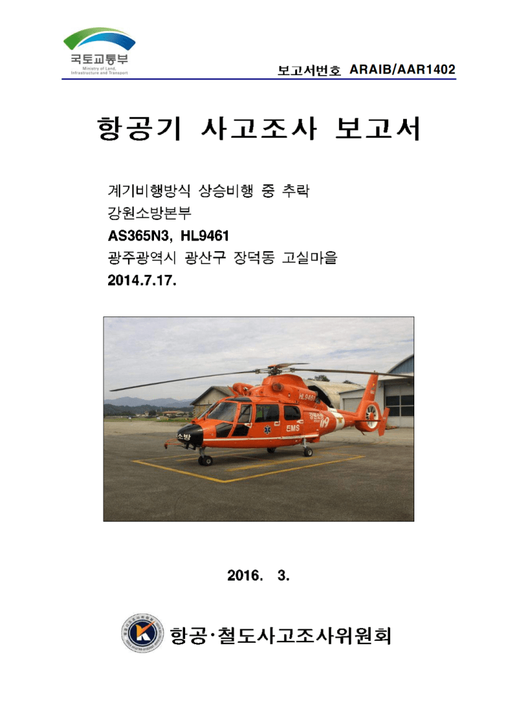
7월 17일 아침 9시, 정성철 기장은 119 특수구조단 단장에게
휴대전화로 복귀할 것이라고 보고하고, 광주공항의 운항실에 계기비행 계획서를 제출했다.
기장의 비행계획서에 따르면, 사고 헬기는 계기비행방식
(IFR, 기계를 이용해서 지정된 항로를 따라 비행하는 방식)으로
ENKAS 지점(경기도 용인시 처인구)까지 비행한 뒤, ENKAS 지점에서부터는 시계비행방식
(VFR, 조종사가 직접 눈으로 기체를 조종하여 목적지까지 비행하는 방식)으로
목적지인 춘천비행장으로 비행한다고 적혀 있었다.
예정 비행고도는 7,000피트(약 2,000미터 상공)이었고, 총 비행시간은 1시간 30분이었다.
당시 광주공항에는 하루종일 비가 내릴 것이라고 예보되어 있었으며
가시거리는 약 3마일(5km) 정도였고, 특히 이륙 직후 고도인
1,500피트~3,000피트에 구름이 심하게 끼여 있었다.
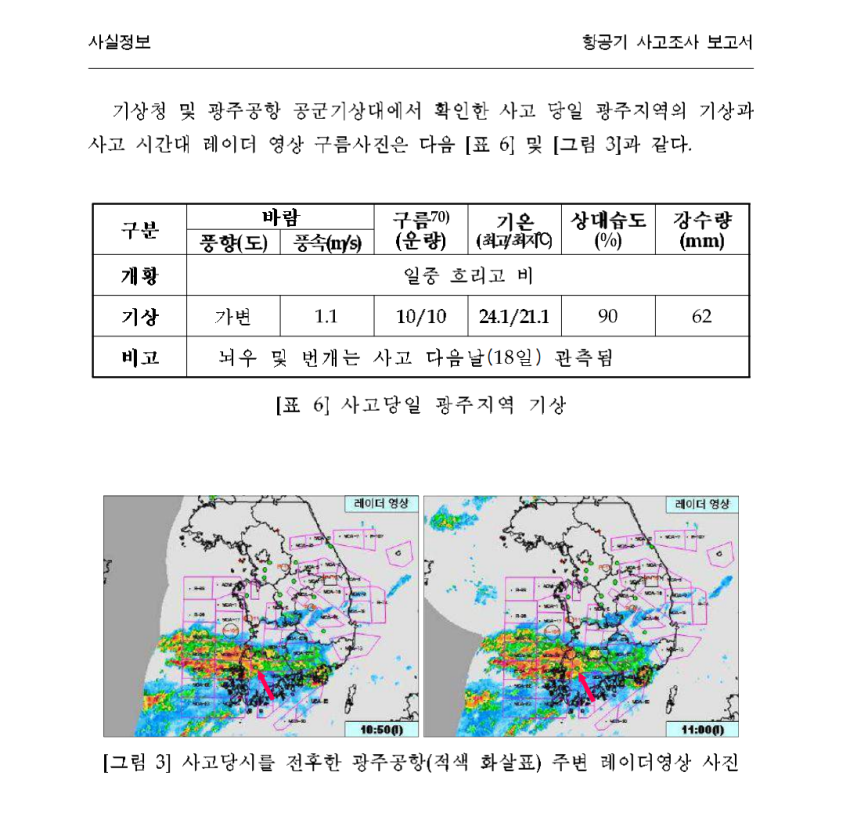
10시 48분 33초, 기장은 관제탑에게 "이륙이 준비되었다"고 말한다. 이에 관제탑은 이륙을 허가한다.
10시 48분 33.4초, CAP: Okay. Gangwon 001, ready for take off.
기장: 오케이, 강원 001호입니다. 이륙 준비 완료했습니다.
10시 48분 36.2초, 타워: Gangwon 001, wind calm cleared for take off.
관제탑: 강원 001호, 무풍(바람이 없는)상태입니다. 이륙을 허가합니다.
10시 48분 39.1초, CAP: Roger, cleared for take off, Gangwon 001.
기장: 네, 알겠습니다.
이륙 허가를 받은 뒤 정성철 기장은 헬기를 띄우기 시작하고, 박인돈 부기장에게 토크 수치를 보라고 지시한다.
10시 48분 58.6초, 기장: Torque(토크) 좀 봐주세요, 토크..
10시 49분 00.2초, 부기장: Okay, 토크 이상 무.
10시 49분 04.8초, 기장: 자, 지금부터는 계기만 보세요, 계기.
10시 49분 16초, 기장은 자동조종을 하기 위해서 오토파일럿의 전원을 켠다.
그런데 이 때, 기장은 오토파일럿의 '방향 모드'는 켰지만,
속도를 자동으로 조절해 주는 '속도 모드'는 잊고 켜지 않았다.
같은 시각, 관제탑의 관제사는 강원 001호에게 출발센터와 교신하라고 지시한다.
그러나 조종실의 라디오 수신상태가 불량했기 때문에, 기장은 지시 내용이 잘 들리지 않는다고 말한다.
10시 49분 17.0초, 타워: Gangwon 001, turn left heading 360,
climb and maintain 7,000. Contact Departure 1240, 1240. Have a nice day.
관제탑: 강원 001호, 좌선회해서 북쪽(방위 360도)으로
비행해 주시고 7,000피트까지 상승해 주세요.
그리고 출발센터와 주파수 124.0MHz로 교신해 주세요. 좋은 하루 되세요.
CAP: Uh, your radio still gabbled unreadable, say again?
정성철 기장: 아, 잘 안 들립니다. 다시 말씀해 주세요.
관제탑: 라디오 잘 들립니다. Turn left heading 360, 고도 7,000 상승하세요. 124.0 컨택 하십시오, 124.0.(관제사가 한국어로 통보)
기장은 관제탑의 지시에 따라 10시 49분 40초에 기수를 왼쪽으로 돌려서 북쪽으로 기수를 틀기 시작한다.
10시 49분 48초, 기장은 부기장에게 조종간을 넘기고 상승하라고 지시한다.
기장: 잡으세요. 7,000까지 올라갈게요. (부기장에게 조종권 인계)
부기장: 네.
기장: 헤딩은 내가 컨트롤 할게요.
위와 같은 블랙박스 대화 내용 등을 종합하면 이때부터 박인돈 부기장이
조종을 하는 주임무조종사(PF, Pilot Flying) 역할을 맡았고, 정성철 기장은
모니터링과 관제를 담당하는 PM(Pilot Monitoring) 역할을 맡았음
10시 49분 55초, 기장은 광주 출발센터와 교신하기 시작한다.
그런데 이 때, 기장이 센터에 "방위 360도로 비행중입니다."라고 잘못 말해서,
부기장이 "(기수방향) 036도 아냐?" 라고 말한다.
10시 50분 56초, 기장이 부기장에게 속도를 120노트(222km/h)까지 올리고 토크를 85%까지 당기라고 말한다.
기장의 짜증
한편 이륙한지 2분 정도가 지난 뒤, 부기장이 기장에게 방향설정을 해 달라고 부탁한다.
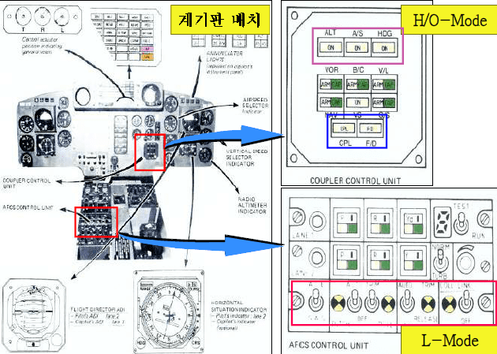
10시 51분 8.0초, 부기장: 여기를 헤딩(방향설정) 모드로 하나 놔줘.
그런데 이 말에 기장은 아주 신경질적으로 반응한다.
10시 51분 13.5초, 기장: 아 그러니까,
여기서 (내가) 헤딩 컨트롤 할 테니까 거기서는(당신은) 헤딩 하지 마라고요.
여기 세팅 다 되어 있다고요.
10시 51분 54초, 기장: 비가 오고 그러니까 라디오 상태들이 다 안 좋네.
조종실의 분위기는 잠깐 동안 험악해졌다가 다시 돌아온다.
10시 52분 정각, 출발센터는 강원 001호에게 LINTA 지점으로 직항하라고 지시한다.
10시 52분 0.0초, DEP: Gangwon 001, proceed direct LINTA climb and maintain 7,000.
린타 지점으로 직항을 지시받자 기장은 부기장에게 이를 전달한다.
10시 52분 08.7초, 기장: 자, LINTA로 갑니다. 선회 들어갈 거에요.
10시 52분 17.2초, 부기장: 오케이...
사고 헬기는 이제 설정된 지점을 따라 LINTA 지점으로 향하기 시작한다.
비행정보 기록장치(블랙박스)의 정보에 따르면,
사고 헬기가 LINTA 지점으로 향하기 시작한지 5초 후인 10시 52분 19초부터
기장과 부기장 중 누군가가 방향타 페달을 오른쪽으로 밟기 시작했다.
하지만 기장과 부기장은 이 사실을 눈치채지 못했다.
10시 52분 20.5초, 기장: 오케이, 괜찮죠?
10시 52분 27.3초, 기장: 계기를 보시고, 여기서는 고만 올리시고요. 예~ 84요, 84.
페달은 오른쪽으로 계속해서 밀어지고,
10시 52분 29초에는 23.5%(블랙박스에 기록된 최고수치)까지 밀어진다.
이 때문에 헬기는 서서히 오른쪽으로 기울기 시작했지만, 조종사들은 이 사실을 아직까지도 눈치채지 못했다.
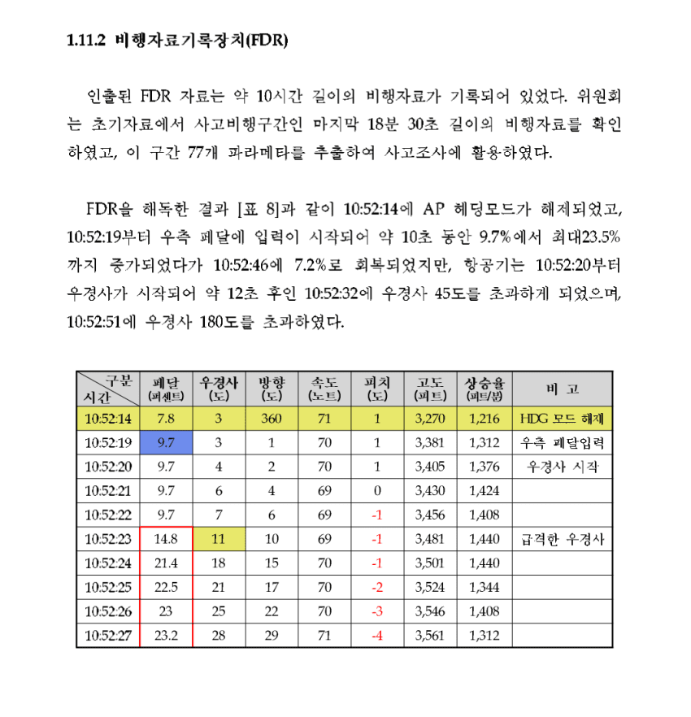
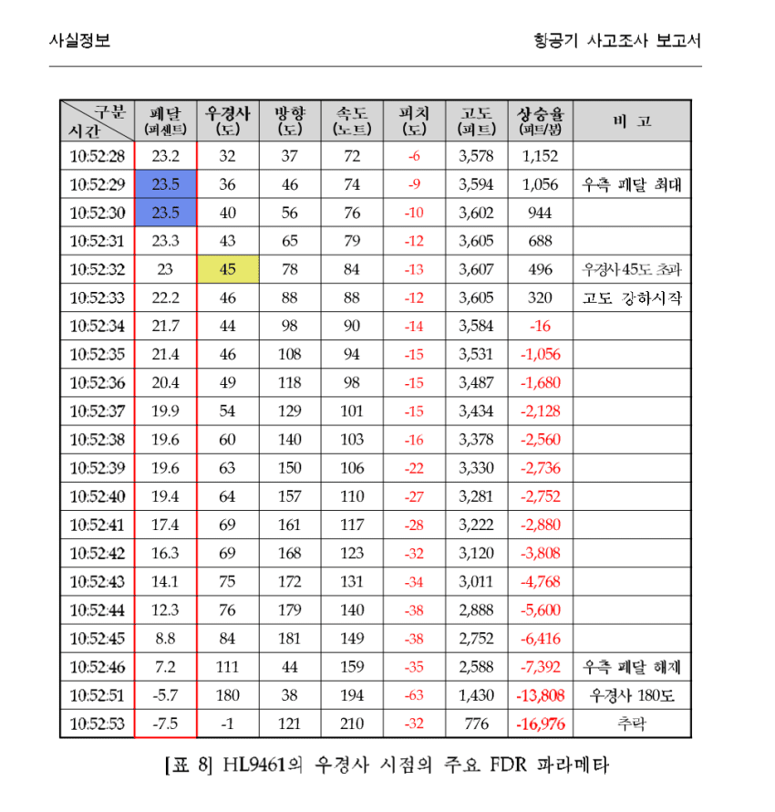
10시 52분 32초, 강원 001호 헬기는 최대고도인 3,600피트(1,100미터)
상공에 도달하였고 이제 급강하하기 시작한다.
이 때 기체는 오른쪽으로 약 45도 기울어진 상태였다.
결국 10시 52분 38.7초, 박인돈 부기장이 "잠깐만..." 이라고 말하며 기체의 이상을 인지한다.
잠시 후 블랙박스에는 정성철 기장의 비명과 안병국 정비사의 "자세 보세요!!"라는 고함소리가 녹음되었다.
10시 52분 38.7초, 박인돈 부기장: 잠깐만...
10시 52분 39.3초, 정성철 기장: 어!!!
10시 52분 40.0초, 안병국 정비사: Attitude, attitude, attitude, attitude!!! (기체 자세, 자세, 자세 보세요!!!)
기장도 이제 기체가 이상한 것을 눈치챈다.
10시 52분 42.2초, 정성철 기장: 자세보세요~~!!!
10시 52분 45.7초, 정성철 기장: 넘어가, 넘어가...
10시 52분 48.0초, 안병국 정비사: Attitude, attitude!!!
10시 52분 50.3초, 박인돈 부기장: Attitude.
하지만 헬기가 구름 안에 있었기 때문에, 조종사들은 헬기가 어떤 자세에 있는지 제대로 알 수가 없었다.
(블랙박스의 싸이클릭 조종간 기록에 기체 회복 시도가 없었던 것으로 보아,
패닉에 빠진 조종사들이 계기를 보지 못해서 기체 상태를 제대로 확인하지 못한 것으로 보임)
10시 52분 51초, 헬기는 완전히 뒤집혔고, 초과금지속도인 175노트를 넘어
194노트(시속 360km)에 이르렀다. 초과금지속도를 초과하자 기체가 견디지 못하고
엔진덮개, 동체 외피 등이 떨어져 나가 분해된다.
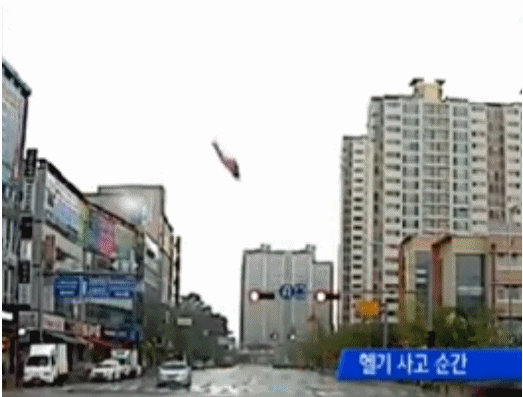
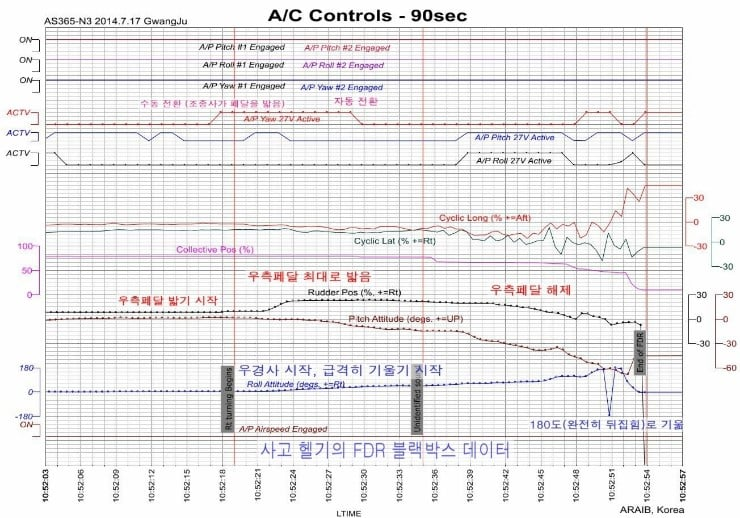
사고 직전 비행 데이터
기장 or 부기장 중 누군가의 우측페달 입력이 기록되어 있다
자동비행기능의 오작동이었을까?
조사위는 그렇게 판단하지 않았다
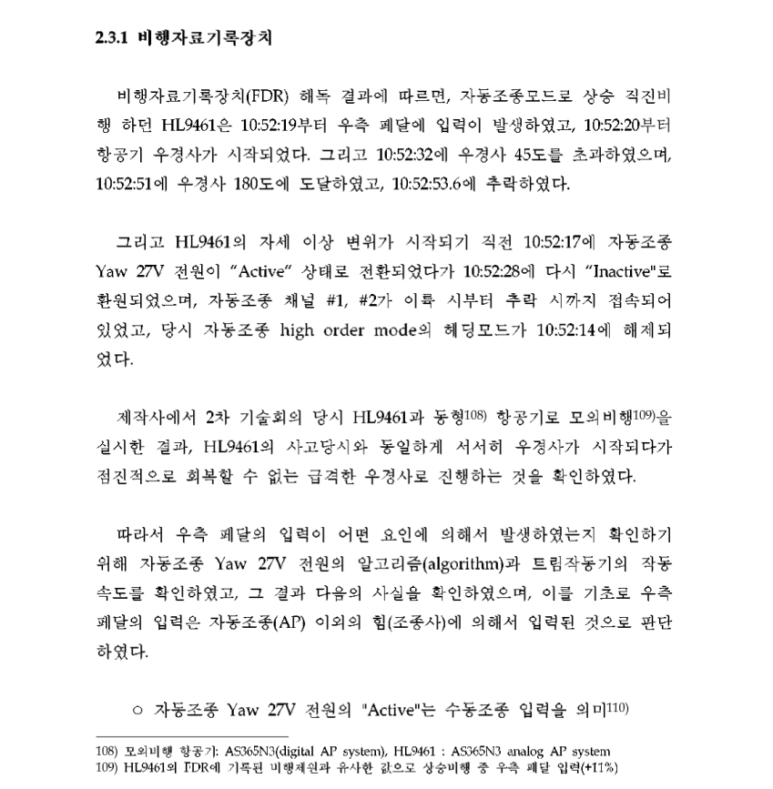
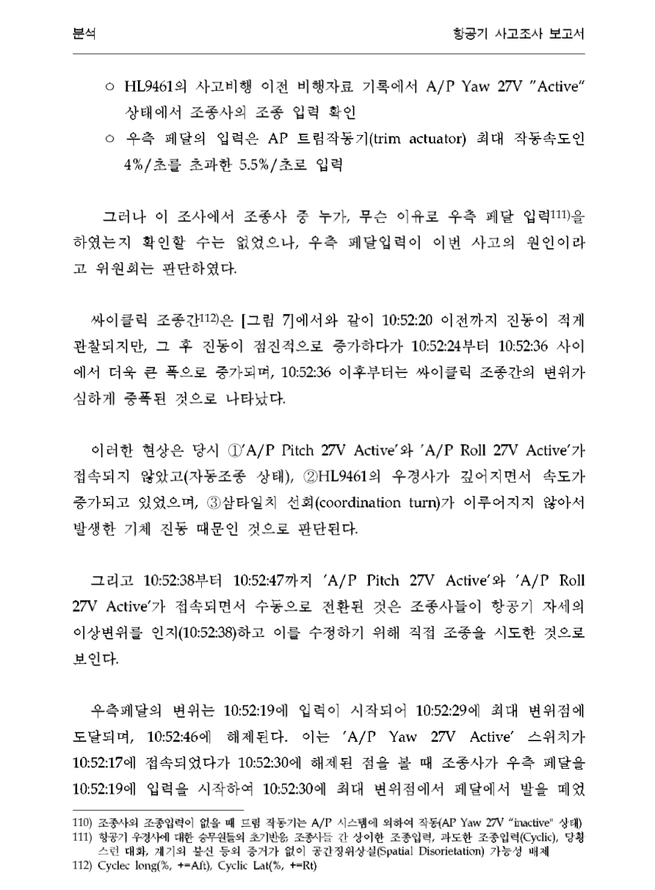
동일 기체로 재현 비행을 시도하여 당시 상황을 연출하였을때
자동비행기능이 급격한 항공기의 자세변화를 만들어내지 못한다는 것을 확인했기 때문이다.
또한 공간정위상실(버티고)의 가능성도 배제하였는데
계기에 대한 불신을 드러내는 발언을 하거나 공간감을 잃고 혼란에 빠지는 등의 대화가 오간 흔적이 없었기 때문이다.
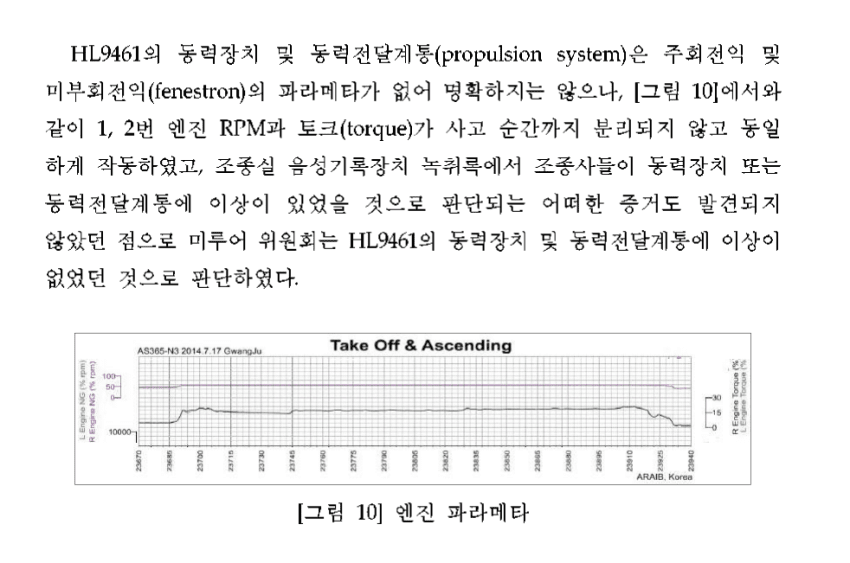
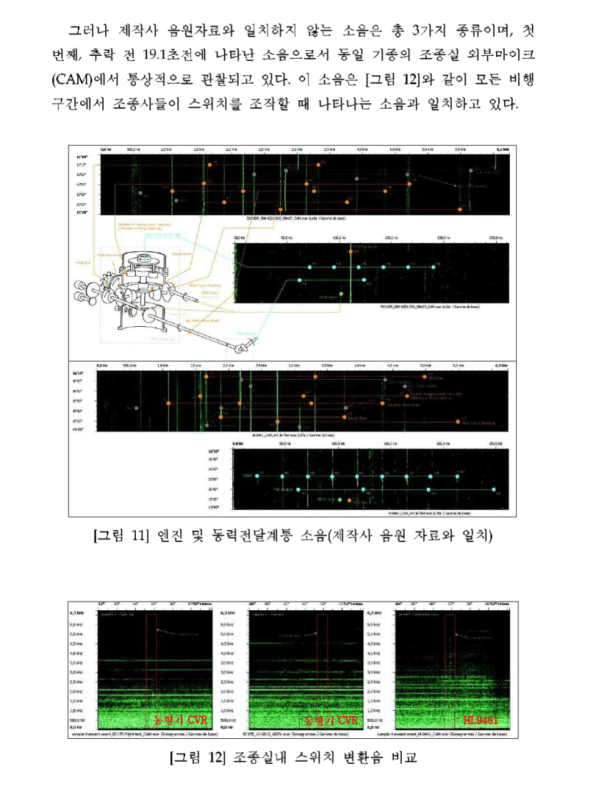
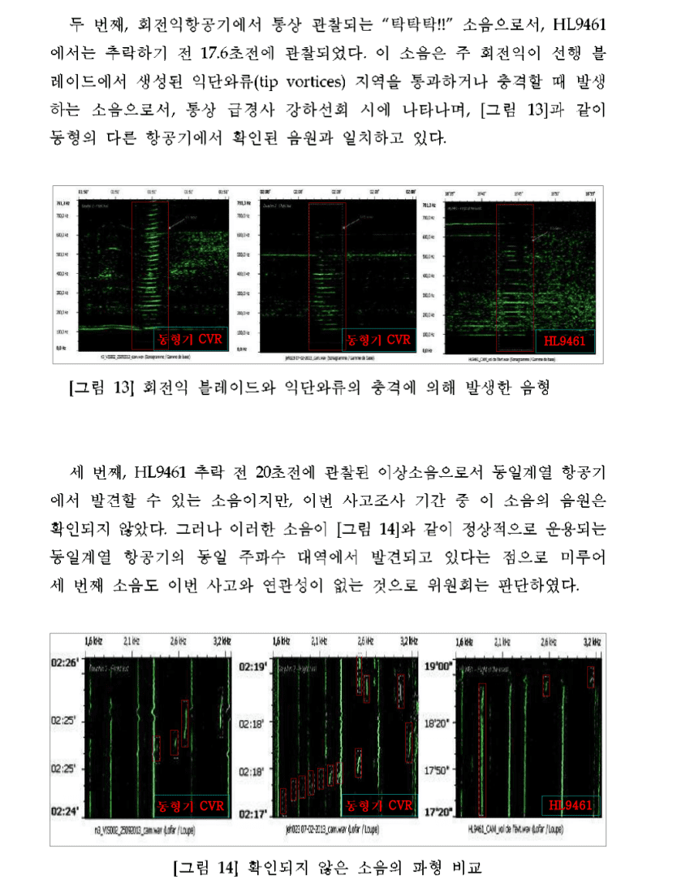
당시 항공기의 동력계통은 정상적으로 작동하고 있었다.
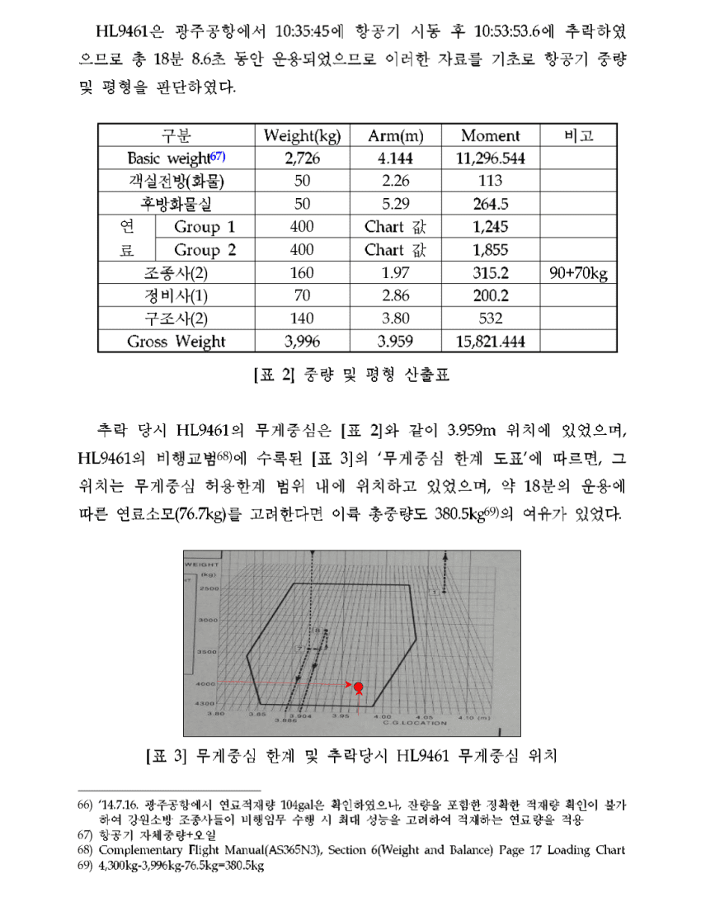
항공기의 무게 중심 또한 적절한 수준에서 유지되었던 것으로 밝혀졌다.
한편 조사관들이 기장과 부기장의 계기비행 자격을 검토하자
두 조종사 모두 계기비행 자격을 상실했다는 것을 확인한다.
두 조종사 모두 계기비행에 요구되는 자격요건은 충족하고 있었으나
항공법 제 45조, 항공법 시행규칙 제 141조, 운영규칙 제3호 등에서 정한 계기비행 규칙
(최종 비행일로부터 6개월 이내에 6회 이상의 계기접근과 6회, 6시간 이상의 계기비행 경험)을 만족하지 못하고 있었다
자격요건은 갖추고 있으나 최근 계기비행을 장기간 실시하지 않아 자격이 소멸된 것이다.
이와 같은 결과를 종합하여 사고조사위원회는 다음과 같은 원인을 발표한다.
사고 원인
: 상승 직진비행 도중 조종사들은 원인 미상의 사유로 우측 페달을 입력하였고,
이는 회복 불가능한 우경사 및 급강하를 유발하여 추락.
기여 요인
: 1. 계기비행 훈련요구시간을 충족하지 못하여
계기비행을 할 수 없는 상태에서 계기비행을 시도함
2. 항공구조대의 조종사 훈련 및 자격관리 미흡
3. 조종사들의 충분하지 못한 계기비행 경험과 의사소통, 협조가 원활하지 못하였음
4. 소방본부 특수구조단장에게 항공분야 지휘조언을 할 수 있는
항공구조대장의 지휘 여건 미흡
댓글
수집 당시 댓글 69개
ㅇㅇ · 11.20 01:28:33
ㅇㅇ · 11.20 01:29:52
ㅇㅇ · 11.20 01:52:48
· ㅇㅇ · 11.20 01:55:15
· ㅇㅇ · 11.20 01:58:58
· ㅇㅇ · 11.21 12:05:09
ㅇㅇ · 11.20 02:45:28
ㄷㅌㄷㅌ · 11.20 03:00:20
· ㅇㅇ · 11.20 04:54:33
· ㅇㅇ · 11.20 04:58:21
봇치쟝 · 11.21 07:01:54
ㅇㅇ · 11.21 07:06:34
ㅇㅇ · 11.21 07:09:41
오
2456778 · 11.21 07:10:50
ㅇㅇ · 11.21 07:12:24
히이잉 · 11.21 07:17:05
구름 · 11.21 07:18:45
히이잉 · 11.21 07:29:05
ㅇㅇ · 11.21 07:31:47
ㅇㅇ · 11.21 07:32:46
ㅇㅇ · 11.21 07:40:08
ㅇㅇ · 11.21 07:40:56
히이잉 · 11.21 07:45:06
ㅇㅇ · 11.21 07:47:49
실베현자 · 11.21 07:49:54
· 실베현자 · 11.21 07:53:18
· ㅇㅇ · 11.21 08:32:45
· ㅇㅇ · 11.21 11:06:42
ㅇㅇ · 11.21 07:52:24
· ㅇㅇ · 11.21 08:29:48
5년미케닉 · 11.21 08:03:23
· Кошечка · 11.21 10:49:55
· ㅇㅇ · 11.21 11:44:40
ㅇㅇ · 11.21 08:06:01
ㅇㅇ · 11.21 08:06:31
· ㅇㅇ · 11.21 08:06:42
ㅇㅇ · 11.21 08:08:35
· ㅇㅇ · 11.21 10:19:57
히이잉 · 11.21 08:13:07
ㅇㅇ · 11.21 08:15:27
· ㅇㅇ · 11.21 08:16:59
· ㅇㅇ · 11.21 08:18:14
· ㅇㅇ · 11.21 08:22:29
· ㅇㅇ · 11.21 08:23:06
· ㅇㅇ · 11.21 09:24:37
ㅇㅇ · 11.21 08:25:25
ㅇㅇ · 11.21 08:26:22
ㆁㆁ · 11.21 08:29:13
· ㅇㅇ · 11.21 08:38:49
· ㅇㅇ · 11.21 09:55:35
· ㅇㅇ · 11.21 11:19:19
· ㅇㅇ · 11.21 12:06:59
ㅇㅇ · 11.21 08:34:40
경상도는
흑인국가
히이잉 · 11.21 08:51:08
가츠 · 11.21 09:04:34
ㅇㅇ · 11.21 09:13:21
ㅇㅇ · 11.21 09:20:46
ㅇㅇ · 11.21 09:21:25
· ㅇㅇ · 11.21 09:30:42
ㅇㅇ · 11.21 09:23:09
ㅇㅇ · 11.21 09:29:54
ㅇㅇ · 11.21 09:54:12
ㅇㅇ · 11.21 10:02:17
ㅇㅇ · 11.21 10:11:23
ㅇㅇ · 11.21 10:50:27
ㅇㅇ · 11.21 11:14:24
ㅇㅇ · 11.21 11:14:31
ㅇㅇ · 11.21 11:18:04
ㅇㅇ · 11.21 11:45:28